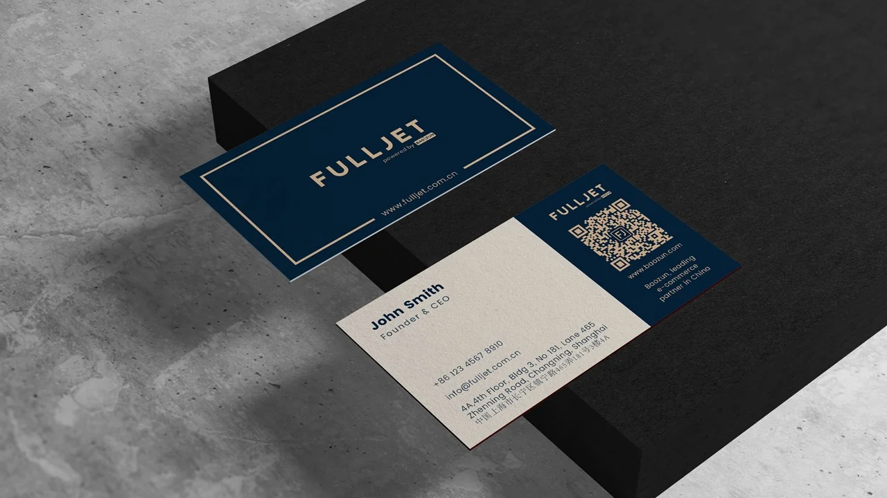
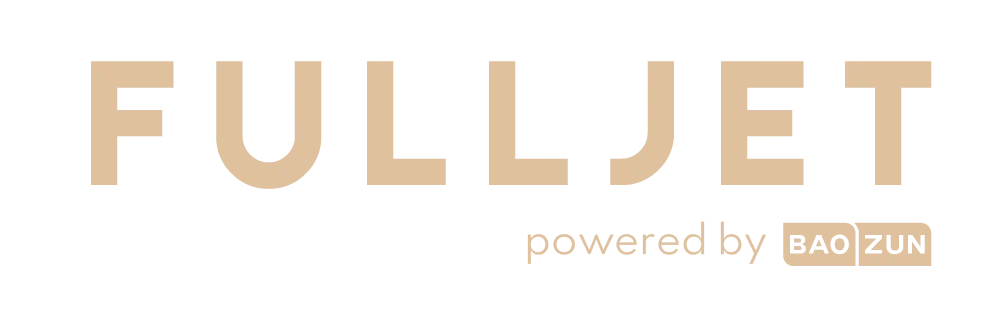
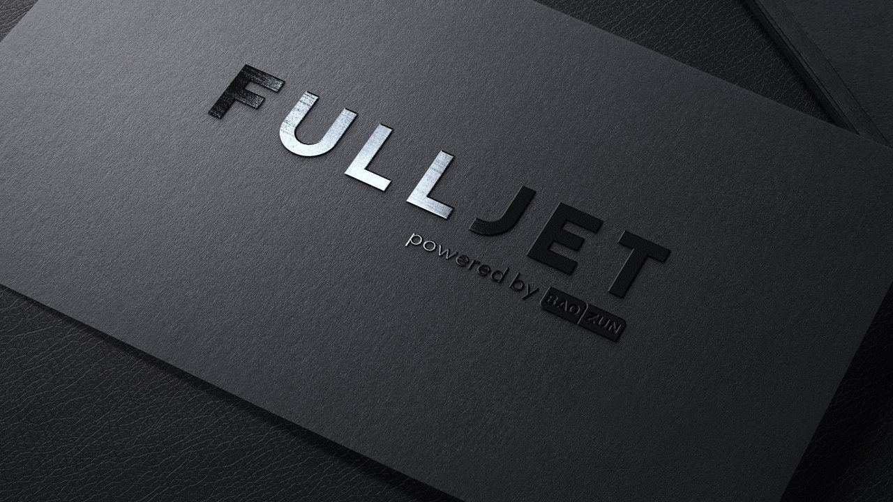
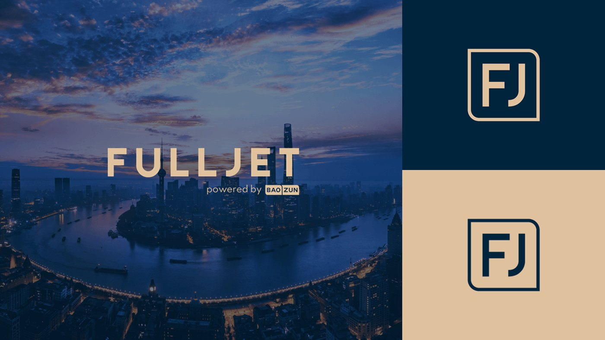
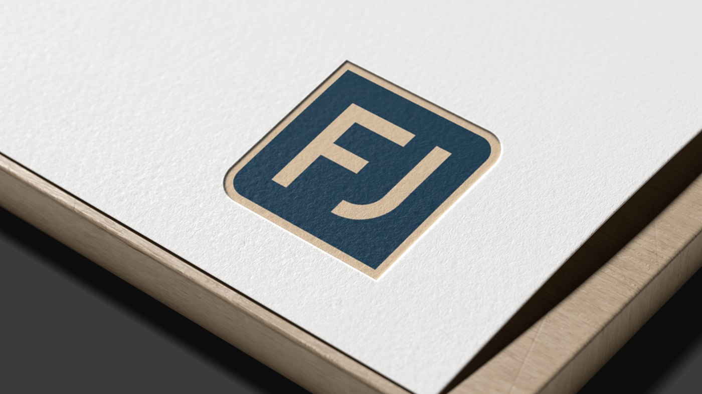
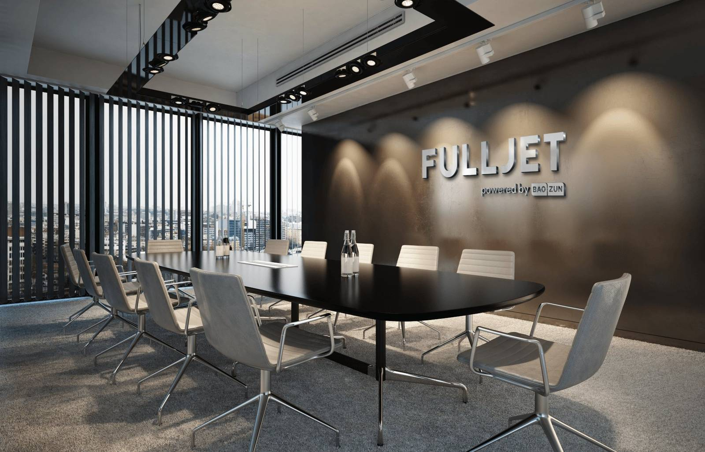
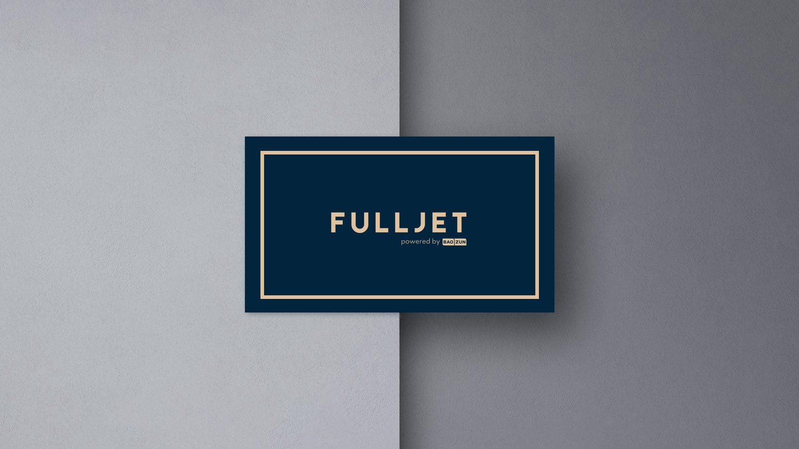
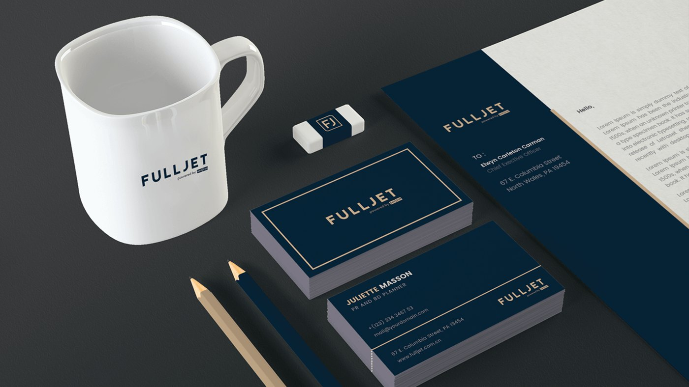
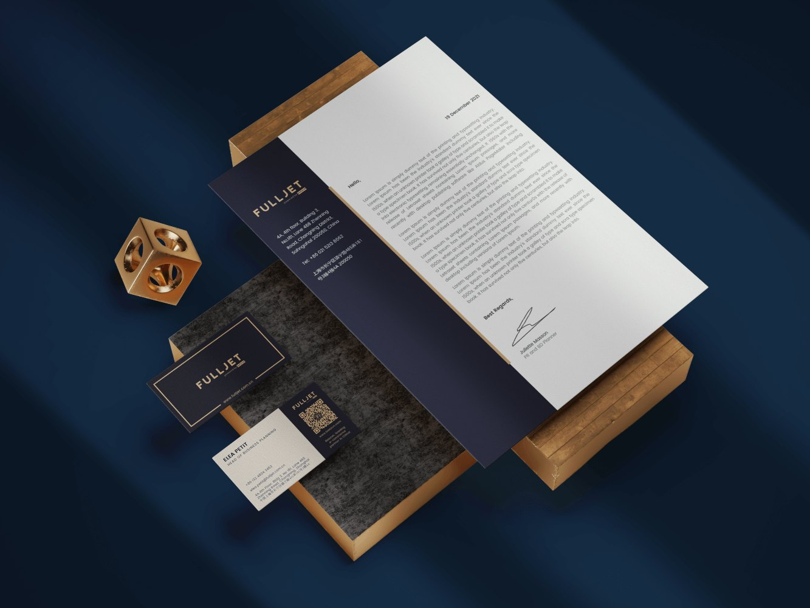
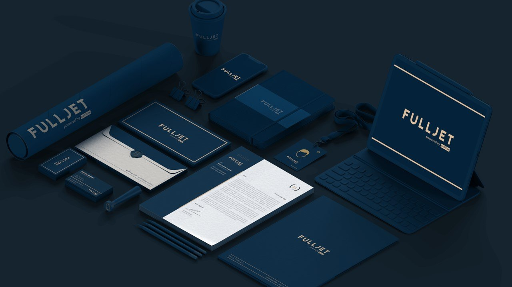

Luxury · Brand Platform
A Fresh Look
for a New Chapter
Fulljet provides ecommerce solutions to empower brands in China.

Fulljet Powered by Baozun
Luxury · Brand Platform
- Brand Strategy
- Visual Identity
- Website Optimization
Samuel Coopersmith · GM
Luxury. Competent. Sophistication.
Goal
Fulljet needed a new logo and visual identity to reflect their new status after being acquired by Baozun, ensuring they stood out while fitting into their new corporate family.
Solution
We designed a modern logo and refreshed visual identity that combined Fulljet's unique style with the prestigious image of Baozun and Alibaba.
What we delivered.
Brand Strategy
Created a strategy that aligns Fulljet’s vision with Baozun's larger goals of empowering brands.
Visual Identity
Developed a professional visual identity that reflects reliability and ecommerce expertise.
Website Optimization
Enhanced the user interface to provide clear and intuitive navigation for brand partners.
The palette
- Deep blue#02243d · Primary
- Deep blue surface#304b60 · Primary surface
- Light orange#dfc19d · Secondary
- Light orange shade#c0ab90 · Secondary shade

The work








In their words
“Working with Pulse Branding was an absolute pleasure. Their diligence, attention to detail, and care for our project have led to fantastic results that we are all proud of. If you're looking for support on your brand and turning your vision into reality, Pulse can make it happen!”
— Samuel Coopersmith, GM
Where it landed
The new branding gave Fulljet a polished, professional look that reinforced their leadership in the e-commerce consulting industry, while smoothly integrating into the Baozun group.
Have a similar business problem?
Bring us the problem.
You do not need to know which service you need. Start with the problem, or run the free audit and let the evidence choose the next step.